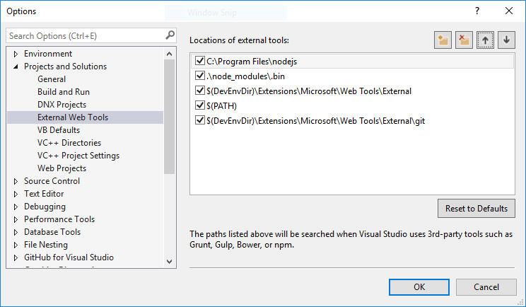
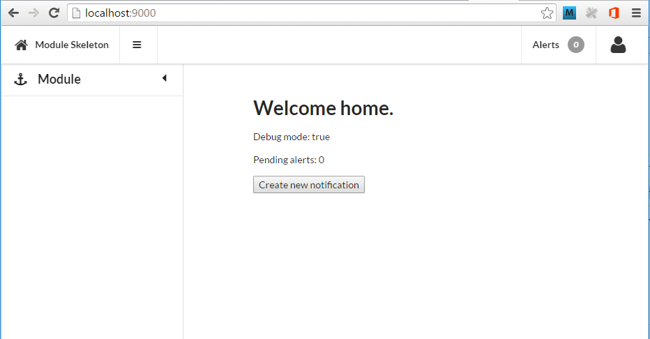

# Get started with client modules Modules are split into two types, client modules and server modules. This document describes how you can get started with a new client side module using the module-skeleton on top of the Aurelia framework.
1. Clone/Download the module skeleton
You will need to clone the module skeloton or download it from the git repository.
Git clone
Use the following command to clone the module skeleton repository into the desired directory.
git clone https://bluenickel.visualstudio.com/Phoenix-Platform/_git/Module-Skeleton [module name]
[module name] is the name of the module which you wish to create and this will create a new directory of this name. The repository will be cloned into this directory.
Since the repository you just cloned has a remote to the module-skeleton repository (i.e any commits would be pushed back to this repo which is undesirable), you will need to remove the origin with the following command.
git remote remove origin
You can then add a new origin to the location of your actual module repository on VSTS, Github or other Git service. You can use the following command to do so.
git remote add origin [url of remote git repository]
Note: You will need an authorised Microsoft account to access the repository.
Note: You will need a git client installed in order to perform the git commands above. See Git for windows.
Download
You can download the repository as a zip file by browsing to the following link. Extract the contents to the desired location.
https://bluenickel.visualstudio.com/Phoenix-Platform/_git/Module-Skeleton

2. Preparing the module
If you are using Visual Studio, rename Module-Skeleton.csproj and Module-Skeleton.sln to the desired name of your moduel.
If you are using Visual Studio Code or another similar editor such as Sublime or Atom, you may optionally delete the two files above.
Note: If you are using Visual Studio, you will need to remove the reference to the Module-Skeleton project in the solution and add an existing project for the project file that you have renamed.
Rename the directory src/module-skeleton to the name name of your module.
Edit the information in package.json to reflect your new module.

3. Install Dependencies
You need to install NPM and JSPM dependencies as well as the TypeScript typings. The following commands describe how to do this. All the commands in this section should be executed in the same directory as your module directory, the one you just created.
Install NPM dependencies
To install all NPM dependencies, use the following command.
npm install
Note: You need to install Node.js before you can use NPM (Node Package Manager).
Note: When opening the project in Visual Studio 2015, this command will be executed automatically. Look to see whether the command has been completed in Output window before continuing with the other commands.
Setup the Phoenix JSPM registry
If you haven't done so already you will need to configure a JSPM endpoint for Phoenix dependencies. Use the following command to start the process and follow the prompts using the information below.
jspm registry create phx jspm-npm
npm registry: https://www.myget.org/F/phoenix/npm
No authentication configured, configure credentials? [no]:y
Configure token-based authentication? [no]:n
Enter your npm username (optional): ***
Enter your npm password (optional): ***
Would you like to test these credentials? [yes]:
ok npm authentication is working successfully.
Note: Your npm username and password are your credentials for your MyGet account which has access to this feed.
Install JSPM dependencies
Use the following command to install all JSPM dependencies.
jspm install
Install TypeScript type definitions
If you haven't done so already, you will need to install the typings application using NPM. Use the following command to do this.
npm install typings -g
Install all the type definitions using the following command.
typings install
4. Build and Run
You should now be able to build and/or run(watch) the new module. You can use the following commands to build and watch the module.
To build the module use the following command.
gulp build
To watch the module which, will rebuild any files that change, you can use the following command.
gulp watch
To serve the module, which will allow you to browse to the module (usually at http://localhost:9000) use the following command.
gulp serve
You can also use the 'Task Runner Explorer' in Visual Studio to run the tasks above. To open this window go to View->Other Windows->Task Runner Explorer.
If you see a message saying 'Failed to load. See output window...'. Try the following.
- From the menu, open
Tools->Options - Then look for
Projects and Solutions->External Web Tools - Add a new entry to
C:\Program Files\nodejs(for an x64 install of Node.js) and move it to the top.

Hosting the module
There are two options for hosting the module. You can use a local IIS server and configure the module project in Visual Studio, or, you can use the gulp serve task.
We will leave out how to use a local IIS server for now. Use the serve task above to host the site and then browse to http://localhost:9000.
You should see the default module tempalte and menu.
